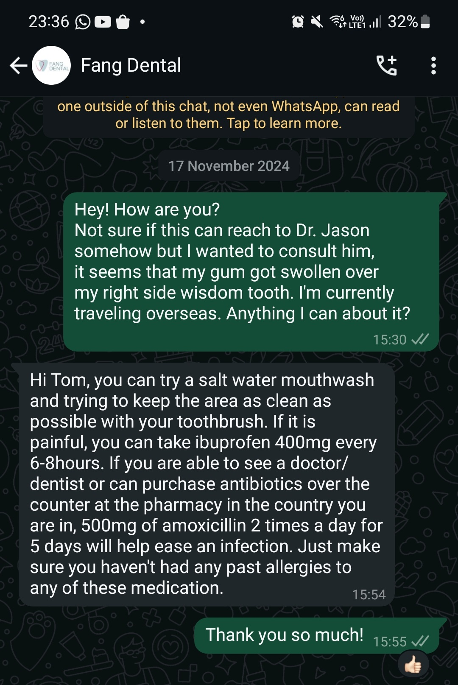

Wisdom Tooth 2
When I was in South Korea my remaining wisdom teeth started throwing a tantrum. The gum near the lower one was swollen presumably because of an infection. It was horrible! I could bearly eat on that side of my mouth and I felt it throughout the day. Unfortunately I was traveling so I didn't have access to my dentist. I shot him a message and he basically told me to use saltwater as mouthwash and to try to clean the area with a tooth brush. Or take antibiotics.

I didn't have antibiotics or a saltwater mouthwash but going in deep with the toothbrush, albeit painful was the solution and after 4 days it was back to mostly normal.
Thing is I remember this exact pain throughout my teen life, in that exact tooth. And every time it pops up I'm like "Oh! I had this before!" And the second it goes away I forget it ever existed.
So when I landed in SG I went to the dentist to check it out. I told him the story and he said nonchalantly "yeah, it's common. Listen we can wait and see if it happens again, or! We can take it out"
I thought about it for a couple of seconds and I remembered all the perks (MC, and even more MC) so I said, sure let's take it out. Thing is, in Israel when you make a decision like that you will have to reschedule a wisdom tooth extraction. But here in SG, he just started to get ready to take it out. And after 30 minutes I was pain free! With a week of recovery but pain free at last!
This time it wasn't a big deal at all. I went to the dentist, I took it out, went home and went on with my day. Only thing was again I couldn't really eat anything solid of the next 5 days. My face wasn't swollen. People even didn't really believe me I took it out. And so began my MC.
I do think that my body was recovering because I was exhausted, and didn't have the will to do anything. At least for the first 3 days. I wanted to stay at home all the time, brainlessly watching YouTube videos, bearly eating because I couldn't really eat anything apart from yogurt, scrambled eggs, etc'
I did request for only 5 days of MC, you see I felt bad. I had a feeling that the recovery wouldn't be that bad as of reference to last time. And the week prior I was sick with a flu from Tuesday until the end of the week. So I'm basically gone for 2 weeks. After coming back from a month of traveling. I know I shouldn't really care but what can I do.
Tomorrow I'm coming back to work. Hopefully without any major breaks now. I wonder if it will be different now, as I took out all my wisdom.